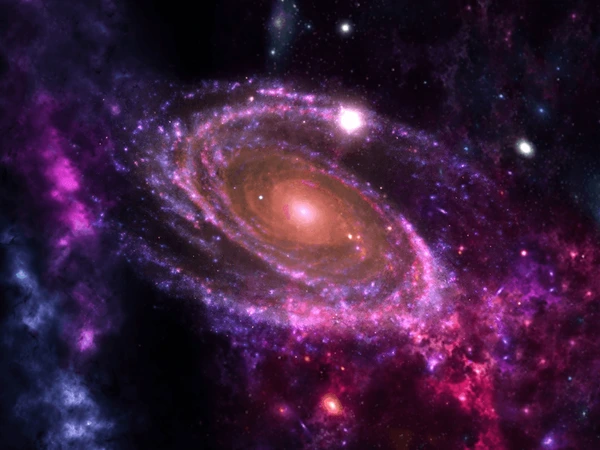
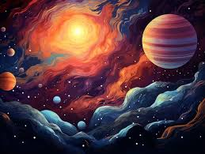
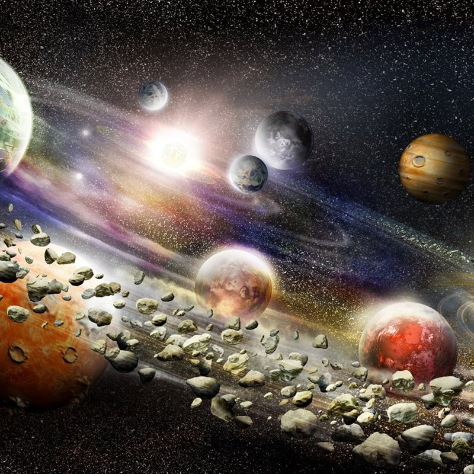

Introduccion a la Astronomía
La astronomía es la ciencia que estudia las estrellas, los planetas y todo lo que desde el cielo refleja nuestra existencia en la Tierra.
Las principales áreas de estudio son: Astrofísica, Cosmología, Planetología y Astrobiología.
Astrofísica
Se centra en las propiedades físicas y los procesos que ocurren en los cuerpos celestes.

Cosmología
Estudia el origen, evolución y estructura del universo en su conjunto.

Planetologia
Se ocupa de los planetas, lunas y sistemas planetarios, incluidos sus procesos geológicos y atmosféricos.

Astrobiología
Investiga la posibilidad de vida en otros planetas y las condiciones necesarias para su existencia.
